Presentata
l’indagine realizzata da Eccellere per Promos - CCIAA
La metà dei
manager italiani intervistati è convinto che ai dirigenti italiani manchino le
professionalità adeguate per affrontare l’evento dell’Expo.
Claudia Bugno
- Promos: la formazione e la professionalità dei manager italiani come priorità
soprattutto nei settori investimenti, logistica e comunicazione.
Milano, 12 novembre 2008
- E’ stata presentata oggi la ricerca
“Expo&Manager” commissionata da Promos Azienda speciale della Camera di
Commercio di Milano per l’internazionalizzazione delle imprese a Eccellere
Business Community. Obiettivo della ricerca è analizzare lo stato di formazione
dei manager italiani in vista dell’Expo 2015.
“Quasi il 50% dei manager
italiani ritiene che le professionalità offerte dal nostro paese siano ancora
troppo scarse rispetto al contesto del mercato internazionale”.
È il commento di Claudia Bugno – Dirigente dell’Area Marketing
Territoriale di Promos.
“Le
professionalità considerate prioritarie per l’evento, da quadri e dirigenti,
sono gli investimenti (30%), la comunicazione (29%) e la logistica (19%), -
continua Claudia Bugno - Milano e
il Paese hanno la possibilità di fare bene in tutti questi campi, anche se
bisognerà fare uno sforzo per continuare sulla strada della formazione
continua e dell’alta professionalizzazione, che sono già un punto di
forza per ogni strategia di marketing territoriale che punti allo sviluppo di
Milano e della Lombardia.”
“Le attese
del mondo manageriale danno segni molto positivi” afferma Nicolò
Occhipinti di Eccellere “se pensiamo che oltre il 60% del campione
(oltre 250 professionals che occupano ruoli di responsabilità aziendali, che
vanno dalla comunicazione alla finanza) è convinto che le associazioni di
categoria e le istituzioni siano ancora in tempo per intervenire a fronte delle
mancanze formative esistenti”.
Il grado di internazionalizzazione
del campione è mediamente elevato, considerato il dato che un manager su due ha
ricevuto offerte da aziende situate all’estero, ed è convinto che ai dirigenti
italiani manchino soprattutto competenze linguistiche (il 48%) e capacità di
fare squadra (30%).
Il 56% degli
intervistati sa di dover competere tutti i giorni con manager stranieri, in modo
particolare durante un evento dal forte carattere internazionale come l’EXPO
(66%). Un manager su due è convinto che ai dirigenti italiani manchino
soprattutto competenze linguistiche (il 48%) e capacità di fare squadra (30%). I
paesi ritenuti più concorrenziali sono quelli anglosassoni, (Gran Bretagna,
seguita dagli USA) anche se oltre la metà del campione non ha ben chiara la
nazionalità con cui dovrà competere.
Per ulteriori
informazioni:
|
Area Marketing Territoriale Promos – Camera di Commercio di Milano Antonio Belloni e-mail: belloni.antonio@mi.camocm.it
tel.
02 8515 5148 – 331 6704800
Responsabile Comunicazione Francesca Sironi
e-mail:
sironi.francesca@mi.camcom.it
tel.:
02.85155148 - 3316075376
|
Eccellere Business Community Enrico Ratto e-mail: enrico.ratto@eccellere.com
tel.
3292211784 |
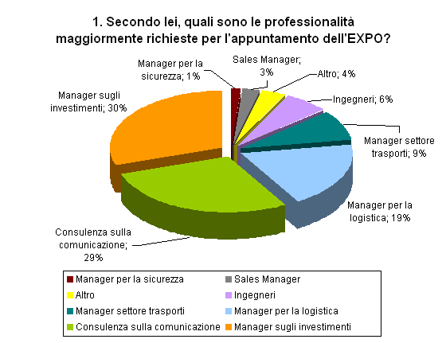
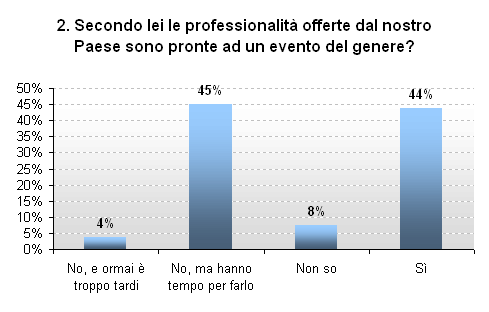
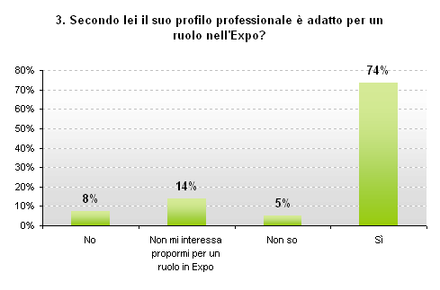
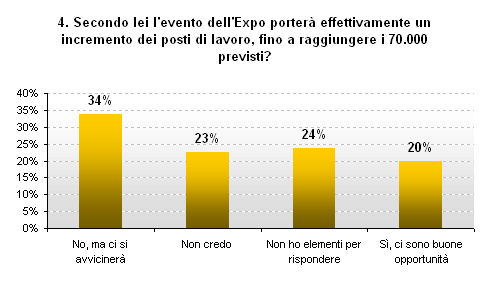
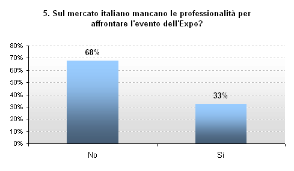
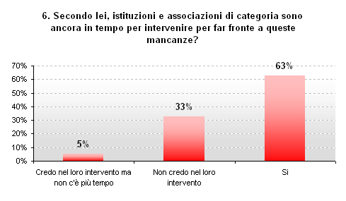
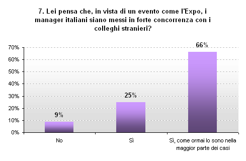
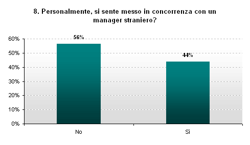
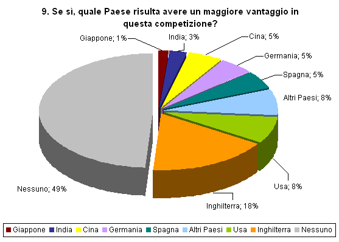
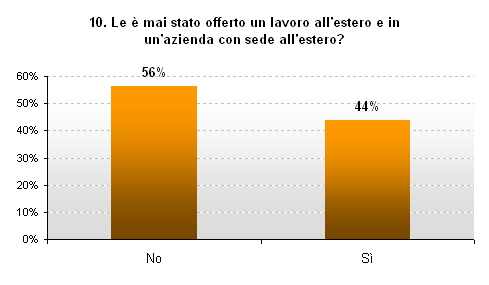
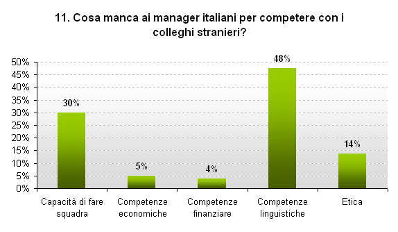